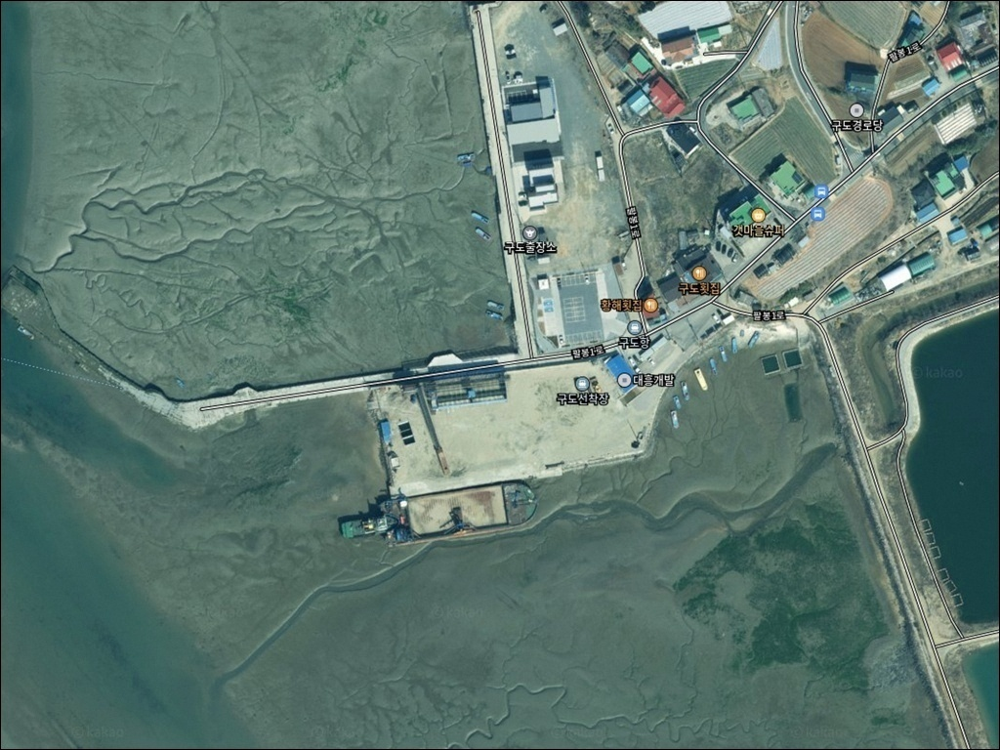
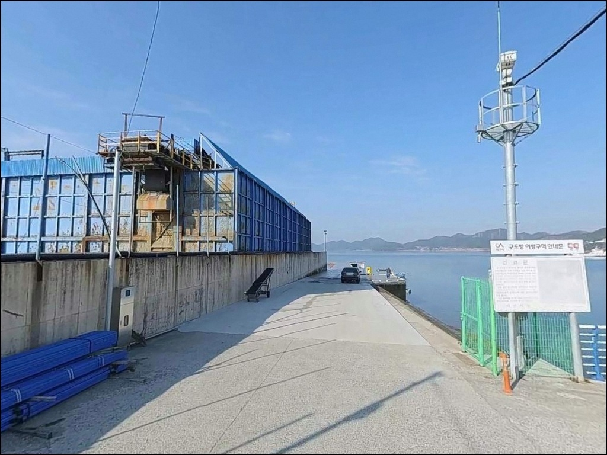
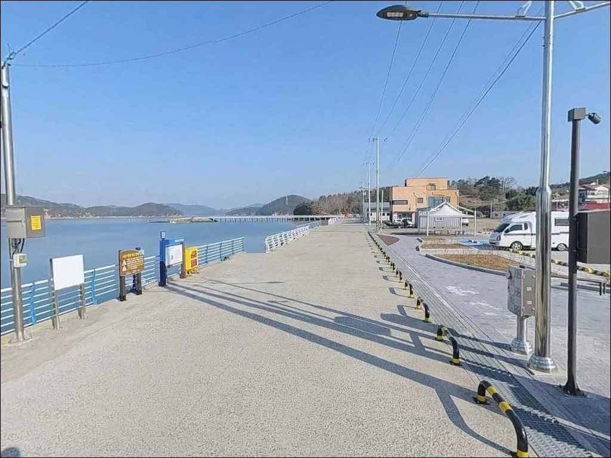
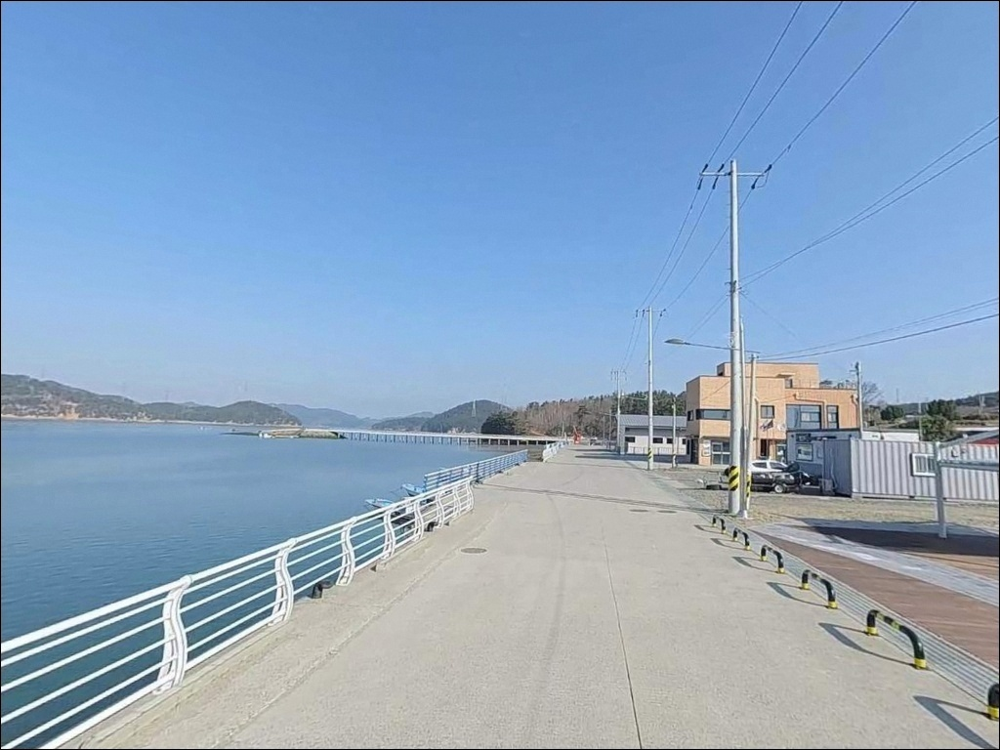
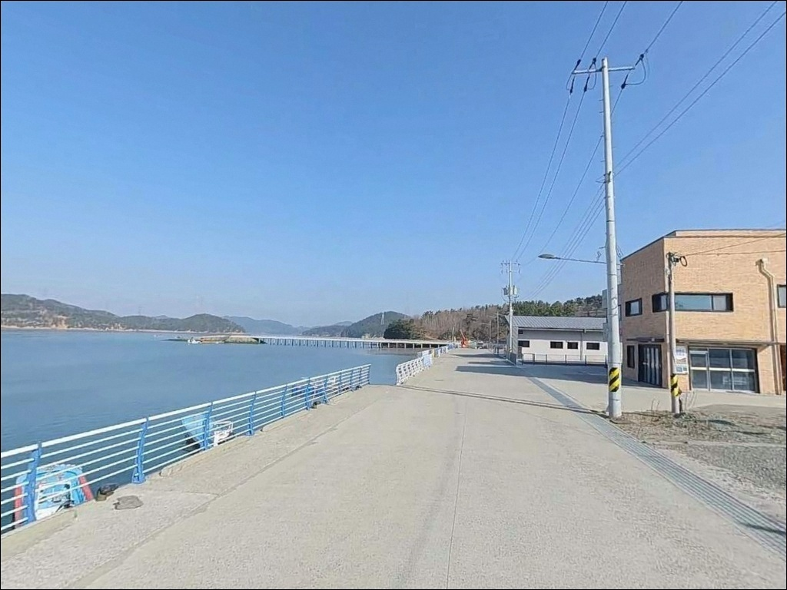
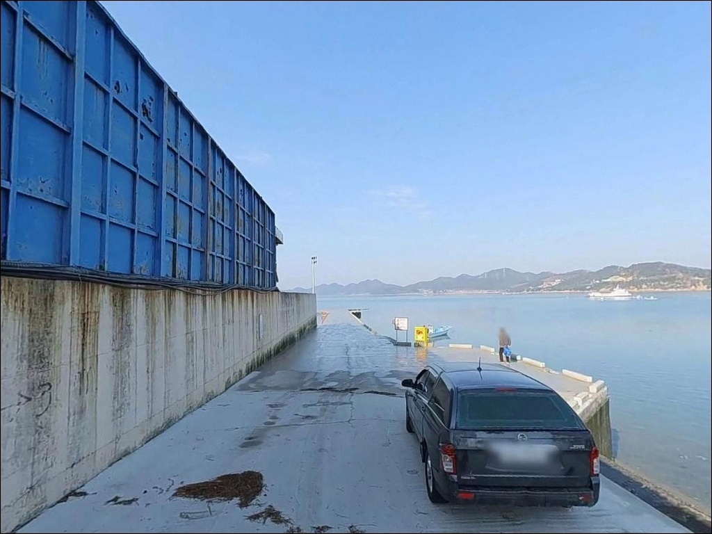
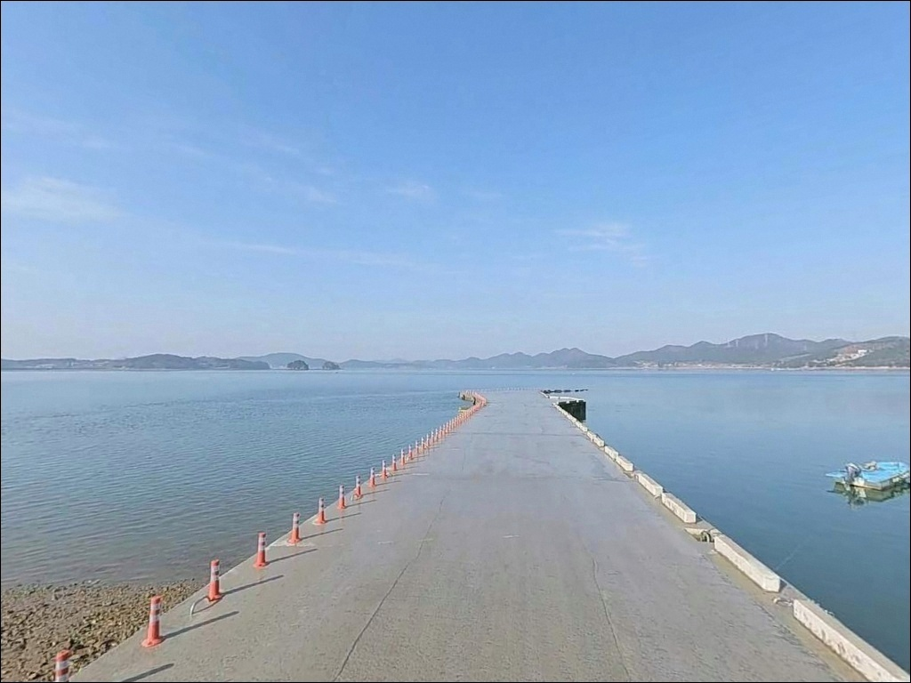
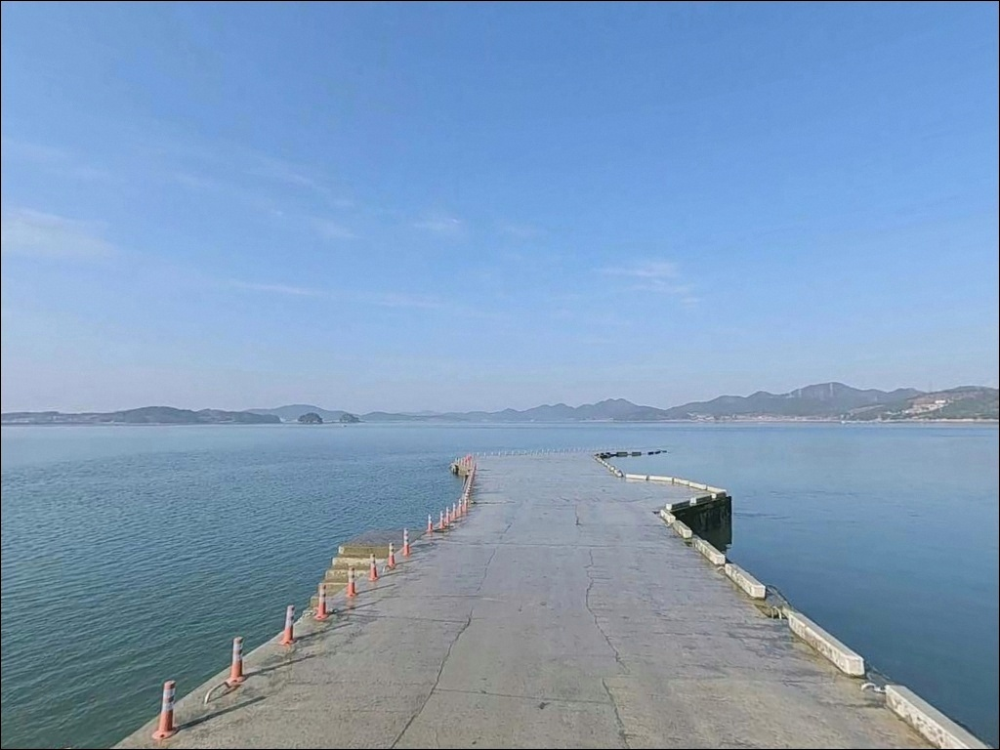
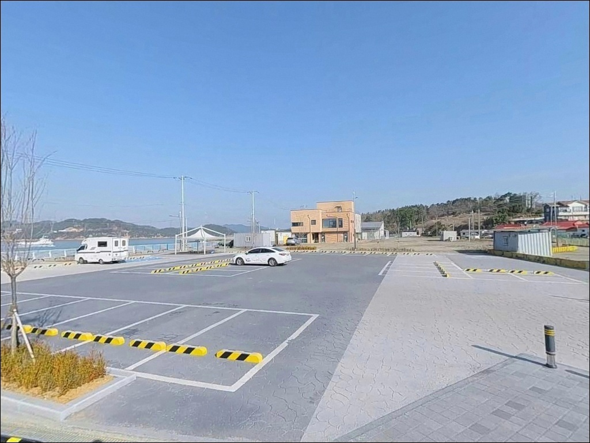

이 페이지에는 광고(제휴 링크 포함)가 있으며, 광고 링크를 통해 구매하면 운영자가 판매 수익 또는 수수료를 받을 수 있습니다. 포인트 사진: 카카오맵 스카이뷰·로드뷰. 이 페이지의 지도·사진 이미지는 카카오맵의 실제 서비스 이미지와 다를 수 있습니다.

구도항
충남 서산시 팔봉면 호리 621-3
가로림만 내만 깊숙이 자리한 구도항은
간조 때 갯벌이 넓게 드러나는 서해형 포구입니다.
물때 계산 없이 진입하면
선착장 앞 일대가 바닥을 드러내
채비를 던질 자리 자체가 사라지는 구조입니다.
만조 전후 약 2시간이 실질적인 낚시 가능 구간이라는 점을
모르고 오는 경우,
긴 이동 거리만 낭비하는 상황을 맞게 됩니다.
이 포인트에서 시간을 아끼려면
물때 확인이 출발보다 먼저입니다.
이 글은 구도항의 물때 기반 진입 조건,
지형별 낚시 방식 판단, 차박 체류 여건에 집중합니다.
조황 단정이나 특정 어종 보장은
이 글의 범위에 포함되지 않습니다.

서해안고속도로 서산IC에서 팔봉면 방향으로
진입하는 루트가 일반적입니다.
내비게이션에서 '구도항' 또는 '호리 621-3'을
목적지로 설정하면 포구까지 안내가 됩니다.
도로는 포장된 구조이나,
팔봉면 마을길 구간은 폭이 좁은
농어촌 도로 수준입니다.
소형~중형 차량은 선착장 방향까지
큰 어려움 없이 진입하는 편입니다.
대형 SUV나 캠핑카라면
선착장 진입 직전 구간에서
회차 공간을 미리 확인해 두는 것이 안전합니다.
여객선 출항 시간대에는 차량 이동이 겹칠 수 있어
여유 있게 움직이는 편이 좋습니다.
주차는 선착장 인근 공터형 주차장을
활용하는 방식이 일반적입니다.
여객선 매표소가 위치한 이 주차장은
소형 차량 기준으로 여러 대가 동시에 대기할 수 있는
규모로 확인됩니다.
어선 출입 동선을 막지 않는
가장자리 자리를 먼저 확인하고
주차하는 것이 기본입니다.

가로림만 내만 특성상 외해 파도 영향이 낮아
야간에 비교적 조용한 분위기가 유지되는 편입니다.
민가 밀집도가 낮은 소규모 어촌 마을 구조라
심야 통행 빈도도 적은 수준입니다.
낚시 후 자리를 정리하고
하룻밤 머무는 용도로는 나쁘지 않은 환경입니다.
여객선 매표소가 있는 선착장 부근에는
기본적인 시설 조명이 있는 편이나,
완전히 밝은 환경은 아닙니다.
야간 낚시를 계획한다면 헤드랜턴은 필수이며,
물때에 따라 발 아래 수심이 달라지는
갯벌 지형이 인접해 있어
조명 없이 움직이는 것은 위험합니다.
주차 공간이 선착장 기능과 겹치는 구조라
차박 메인보다는 낚시 대기 베이스 활용에
더 적합한 환경입니다.
여객선 출항 시간대(이른 아침)에는
주변이 분주해질 수 있다는 점을
미리 감안해야 합니다.

구도항 직근 반경에서 편의점·마트에 대한
확정 정보는 확인되지 않습니다.
식수, 연료, 낚시 소품 등은
서산 시내 또는 팔봉면 소재지 방향에서
미리 준비하고 진입하는 것이 현실적입니다.
부족한 것이 생기면 상당한 이동 거리가 발생합니다.
화장실은 여객선 매표소 주변에
갖춰진 것으로 확인됩니다.
고파도행 여객선이 구도항에서 출항하는 구조로,
낚시 외에 섬 여행을 겸하는 경우라면
출항 시간 사전 확인이 필요합니다.
서해랑길 코스 시점으로도 안내되는 곳이라
당일 낚시 후 가볍게 주변을 걷는 일정도
자연스럽게 구성할 수 있습니다.
완전 자급 체제로 진입하는 것이
이 포인트를 편하게 활용하는 기본 방식입니다.

가로림만은 서해안의 반폐쇄성 내만으로,
조수간만의 차가 크고 갯벌이 발달한 해역입니다.
구도항 앞은 간조 시에 갯벌이 넓게 드러나는 구조라,
썰물이 빠진 타이밍에 맞춰 도착하면
선착장 앞 수면 자체가 사라지는 상황이 됩니다.
만조 전후 약 2시간이 실질적인 낚시 가능 구간입니다.
바다타임에서 서산 팔봉면 기준 물때를 확인하고
출발 시각을 맞추는 것이 구도항 출조의 첫 번째 준비입니다.
조류가 흐르기 시작하는 시간대에
채비가 적당히 움직이는 구간이
이 포인트에서 낚시 반응이 살아나는 조건입니다.
기상 확인도 함께 병행해야 합니다.
내만 구조라 파도 영향은 낮지만,
서해 방향 바람이 강한 날에는
체감 환경이 크게 달라질 수 있습니다.
출발 당일 아침 기상 예보를 재확인하는 것이
불필요한 출조를 막는 기본 조건입니다.
어항 내 낚시 시 어선 출입과 작업 동선을
최우선으로 두어야 합니다.
야간에는 구명조끼와 헤드랜턴을 반드시 챙기고,
갯벌 노출 구간에서는 물이 차오르는 속도를
수시로 확인하면서 자리를 잡아야 합니다.

구도항은 외해 파도가 직접 들어오지 않는
반폐쇄성 내만 구조입니다.
방파제와 선착장 직벽 아래 구간은
주변 갯벌 지형보다 수심이 깊어지는 경향이 있어
바닥 어종이 머물기 좋은 조건을 형성합니다.
만조 전후 조류가 흐를 때 이 구간에서
반응이 올라오는 편입니다.
인접한 호리 갯바위는 수심과 지형 변화가
뚜렷한 구간입니다.
갯바위 끝단과 바닥 굴곡이 있는 가장자리가
원투 채비나 바닥 탐색 루어에 반응이 오는 자리로
거론되는 편입니다.
선착장 직벽 아래와 호리 갯바위 끝단은
주변 갯벌보다 수심이 깊어 낚시 공략이 가능한 구간입니다.
가로림만 물길을 통과하는 구조라
조류 흐름이 살아 있는 시간대에는
회유성 어종이 접근할 가능성이 있습니다.
다만 정조 시간대에는 바닥 어종 활성도가
낮아지는 경향이 있어,
조류가 움직이기 시작하는 타이밍을
파악하고 자리를 잡는 것이 핵심입니다.
최신 조황은 가기 전에 꼭 검색해 보시기 바랍니다.

원투낚시는 이 포인트에서 가장 무난하게
시도해볼 수 있는 방식입니다.
갯벌 바닥 구조에서 채비를 멀리 보내
바닥권을 탐색하는 방식이
선착장과 갯바위 모두에서 적합합니다.
조류가 흐르는 만조 전후에
채비가 적당히 움직이는 구간에서
반응을 기대해볼 수 있습니다.
루어낚시도 시도해볼 만합니다.
선착장 석축과 갯바위 주변에서
지그헤드 채비로 바닥층을 천천히 탐색하는 방식이
이 지형 구조에 어울립니다.
가을 시즌에는 가로림만 권역에서
주꾸미·갑오징어가 접근하는 경향이 있어,
지그헤드 채비를 활용한 워킹 낚시도
계절에 따라 시도해볼 수 있습니다.
찌낚시는 만조 전후 수심이 확보되는 구간에서
활용하는 편이 효율적입니다.
수심이 충분히 들어온 시간대에
선착장 가장자리나 갯바위 외측에서
시도하는 방식이 이 포인트 구조에 맞습니다.
수심이 얕아지기 전에
자리를 미리 확인하고 채비를 조정해야 합니다.

구도항 조류가 기대에 못 미치거나
포인트가 혼잡할 때
가장 먼저 이동해볼 수 있는 곳은
같은 가로림만 권역 내
호리 갯바위 포인트입니다.
구도항과 동일한 물길을 공유하는 지형으로,
선착장에서 접근 가능한 거리에 있습니다.
갯바위 특성상 수심 변화와 지형 굴곡이
선착장보다 뚜렷해
원투나 루어 탐색에서 다른 반응을
기대해볼 수 있는 구조입니다.
가로림만 북쪽 권역으로 이동하면
삼길포항(서산시 대산읍 방면)이
서해 낚시 인프라가 잘 갖춰진 대안입니다.
선상 우럭낚시 출항지로 알려진 곳으로,
방파제 주변 낚시도 활성화되어 있는 편입니다.
구도항에서 조과가 부진할 때
이동 동선으로 검토해볼 만한 포인트입니다.
천수만 방면으로 이동하면
당암포구(서산 AB방조제 인근)가
주꾸미·갑오징어 워킹낚시 포인트로 거론됩니다.
가을 시즌 주꾸미를 메인으로 노릴 계획이라면
이쪽 동선도 함께 검토해볼 수 있습니다.

원투낚시나 루어 탐색을 주로 즐기는 낚시인이라면
선착장 직벽과 호리 갯바위를 연계해
탐색해볼 수 있는 환경입니다.
온라인 정보가 많지 않은 조용한 포인트를 찾는 분께는
물때만 익혀두면 활용 폭이 넓어지는 곳이기도 합니다.
가로림만 내만 특성을 모르고 오면
헛걸음이 되는 구조이지만,
물때 하나만 제대로 파악하면
그 조건은 쉽게 해결됩니다.
여객선이 드나드는 선착장 구조라
자리 선택에 신경 써야 하고,
자급 준비 없이 진입하면 불편함이 큽니다.
낚시하고 서해 내만의 썰물과 밀물을
차박으로 천천히 경험하고 싶은 분이라면,
물때와 자급 준비 두 가지를 갖추고 오는 것이
구도항을 제대로 활용하는 방법입니다.